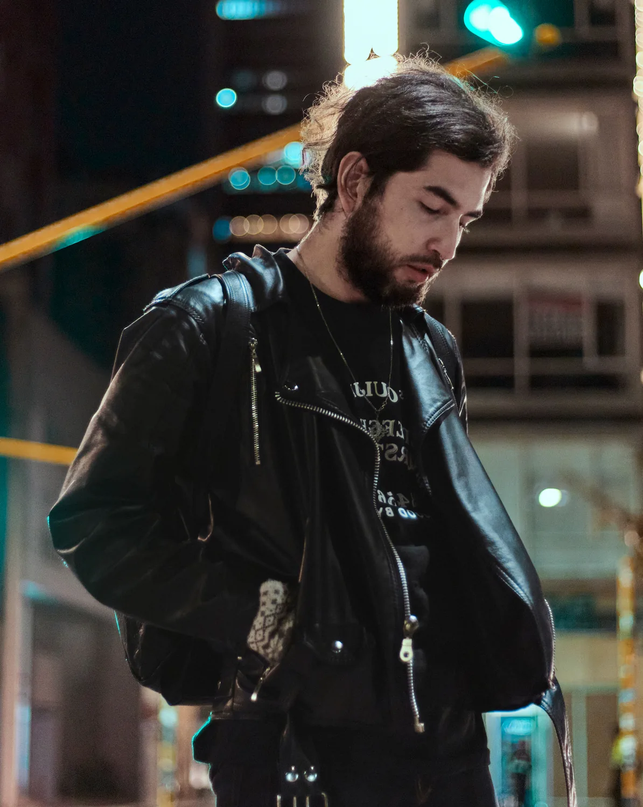

Ami Gautier ☾𖤓
photographer | visual storyteller | developer
Ami Gautier is a photographer and artist known for his nostalgic and poetic style, creating a
mystical atmosphere that manages to immerse the viewer in each photograph.
He spends a lot of time choosing the places, colors and details in his photographs to recreate
them as he imagines them in his head. He is able to choose everyday scenarios and transform them
into dreamlike moments.
Early in his journey, Ami began drawing at the age of 8, developing an early sensitivity toward
composition, detail, and visual storytelling. Years later, at 16, he took his first steps into
photography during a graphic design course, where he worked with a Leica film camera and created
black and white images of Bogotá’s historical architecture. This experience marked a turning
point, revealing a deeper interest in capturing atmosphere and narrative through the lens.
His connection to nature has been shaped through multiple travels across Colombia, where
landscapes, textures, and quiet moments became an essential part of his creative language. Over
time, Ami has collaborated with various local brands, models, and fashion labels, developing a
versatile approach that moves between commercial work and artistic expression.
Services ᚠ
Editorial & Brand Photography
I create refined, story-driven imagery designed to elevate brands through thoughtful visual direction. From product campaigns and beauty editorials to fashion imagery and interior spaces, every photograph is crafted with intention, atmosphere, and a strong artistic identity. My approach combines commercial precision with an editorial eye, creating visuals that not only showcase your product or space, but communicate emotion, lifestyle, and brand value.
Web Design
I design thoughtful, visually engaging websites that bring brands to life in the digital space. Every project is built with a balance of aesthetics, functionality, and user experience—creating websites that feel intuitive, modern, and aligned with your brand identity. From portfolio sites to commercial platforms, my goal is to create digital experiences that connect with your audience and leave a lasting impression.
Content Creation
I create intentional, high-quality content designed to connect brands with their audience in an authentic and visually compelling way. From short-form videos and campaign imagery to lifestyle content and social media assets, every piece is crafted to tell a story, build trust, and strengthen your digital presence. My focus is creating content that feels natural, elevated, and aligned with your brand’s identity, values, and long-term vision.
Print Design
I design printed materials that communicate your brand with clarity, elegance, and purpose. From business cards and brochures to catalogs and promotional pieces, every detail is carefully crafted to create a cohesive visual experience. My approach combines strong design principles with thoughtful storytelling, creating materials that not only inform, but leave a lasting impression on your audience.
☽ Clients ☾
